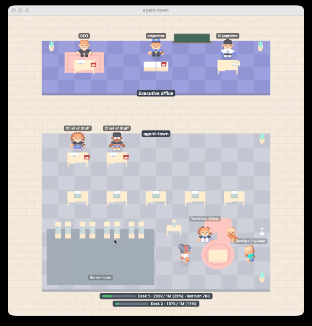

把 Claude Code 的工作，看成一間小辦公室。
你交給 Claude Code 一個工作，然後就只能等。Agent-Town 讓你看到中間發生的事：誰在做事、誰被叫來幫忙、什麼時候需要你。
要裝兩個部分：Mac 或 Windows 的 app，以及 Claude Code 裡的 town-link plugin。沒有 plugin，app 不會顯示任何東西。兩者都免費、開源，都在你自己的電腦上執行。

辦公室裡的每個人，代表 Claude Code 正在做的一件事。
- 執行長
就是你。你輸入的每個 prompt 都會變成一張工單，用電話交給對的座位。Claude Code 需要你點頭時，你的電話就會響。
- 幕僚長
一個 Claude Code session。接下你的工單，依工作類型戴上帽子，做完後打電話向你回報。
- 職員
Claude Code 找來幫忙的 subagent。他們在休息區待命，走到座位上做事，做完再回報。
- 作業員
在背景長時間執行的工作，例如建置和測試，在機房的機櫃前處理。
- 調度員
管理排程和重複工作的看板，時間一到就用無線電把工作交給對應的幕僚長。
- 稽核員
站在櫃台。檢查沒過、工作被退回時，稽核員會蓋上「退回」的章，工作繼續進行。
不用盯著終端機，也知道現在發生什麼事。
做完會有聲音
辦公室可以放在螢幕角落，也可以藏起來。派出工作、工作完成、Claude Code 在等你的時候，都聽得到提示音。
一個專案一個區塊
每個開著的專案都有自己的辦公區塊，招牌上有專案名稱，和正在進行的工作的短標題。
一條看上下文的長條
每個區塊下方有一條長條，顯示這個 session 的上下文用了多少，也就是 Claude Code 整理對話前還剩多少空間。
在筆電螢幕上
精簡檢視把辦公室縮成一半大小，閒置的專案可以先隱藏，小視窗會自動跟著有人走動的地方。
English 和繁體中文
App 有英文和繁體中文，會跟隨你系統的語言設定。
它只負責看
Agent-Town 不會碰你的工作。事件只留在你自己的電腦裡，也不會傳給我們。它怎麼處理你的資料。
一開始只是一個聲音。
Claude Code 有些工作要做很久。你輸入 prompt，它開始讀檔案、跑指令、找幫手，然後你只能等。我想知道兩件事：它現在在做什麼？做完了沒？
最初的想法很小：長時間的工作做完時，播一個聲音。但 Claude Code 其實一直在說它在做什麼：用哪個工具、開了哪個幫手、什麼時候在等核准。既然每件事都能被聽到，也就能被看到。所以那個聲音，後來變成了一間辦公室。
Samson Chen，Agent-Town 的作者
兩個部分：app，和一個 Claude Code plugin。
App 負責畫辦公室，plugin（town-link）負責告訴它 Claude Code 正在做什麼。兩個都要裝。
Mac
macOS 15 或更新版本。已由 Apple 簽章與公證。
用 Homebrew 安裝：
brew tap samsonchen/agent-town-claude-code https://github.com/samsonchen/agent-town-claude-code brew install --cask samsonchen/agent-town-claude-code/agent-town
或下載最新的 .dmg，把 Agent-Town 拖進「應用程式」。它會出現在選單列。
Windows
Windows 11。只安裝給你這個使用者，不需要系統管理員權限。
到 Releases 頁面，從最新的 agent-town for Windows 下載 agent-town-setup 並執行。它會出現在系統匣。
安裝程式還沒有程式碼簽章，Windows 可能會顯示「Windows 已保護您的電腦」：按「其他資訊」，再按「仍要執行」。詳見程式碼簽章政策。
Claude Code plugin
Claude Code 2.1.287 或更新版本，並和 app 在同一台電腦上。
在 Claude Code session 裡輸入：
/plugin marketplace add samsonchen/agent-town-claude-code /plugin install town-link@agent-town-claude-code
重新啟動 Claude Code，打開 app，交給它一個工作。
常見問題
它會控制 Claude Code 嗎？
不會，它只負責看。你一樣在終端機、Claude 桌面 app 或 VS Code 裡工作，plugin 不會改變 Claude Code 的任何行為。
它會把我的程式碼或 prompt 傳到別的地方嗎？
不會。Claude Code 正在做的事，只會傳到你自己電腦上的 app。為了替每個工作取名字、選帽子，plugin 會用你自己的 Claude 方案請 Claude 的 Haiku 模型幫忙。App 每天會到 GitHub 檢查一次有沒有新版本，這可以關掉。請看隱私權政策。
可以搭配哪些 Claude 使用方式？
終端機裡的 Claude Code、Claude 桌面 app 的 Code 分頁，以及 VS Code 擴充功能，只要和 app 在同一台電腦上執行。雲端 session 和網頁版 Claude Code 連不到你的電腦，所以不會出現。
這是生產力儀表板嗎？
不是。它只顯示正在發生什麼，沒有分數，也沒有報表。
要付費嗎？
不用。Agent-Town 以 Apache 2.0 授權開源。角色和家具是 Kenney 免費的 CC0 3D 模型。
它和其他叫 agent-town 的專案有關嗎？
沒有。這是 Agent-Town for Claude Code，為 Anthropic 的 Claude Code 而做。它和 Anthropic 沒有隸屬關係，也和其他同名的專案無關。